Desktop heroActive baseline
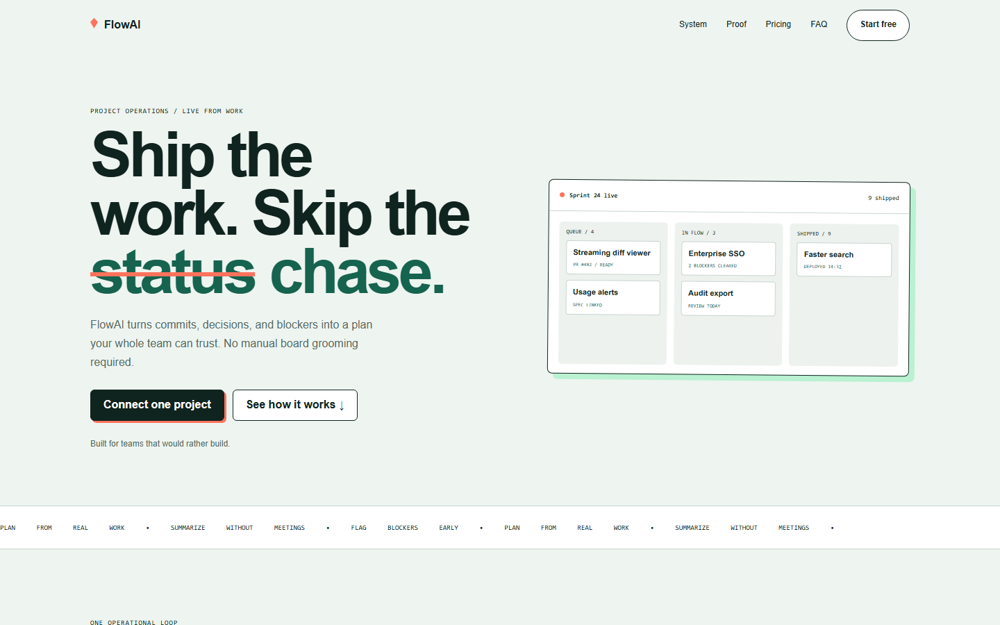
A clean-room rebenchmark of FlowAI and NOVA after canonical vocabulary, contrast, state, manifest, provenance, motion, and responsive ownership repairs.
The repaired system closes every governed reference and validates all declared theme pairs. Both fresh HTML artifacts pass at desktop and mobile with no external network dependency.
The new direction uses an operational ledger, restrained warm paper palette, compact geometry, and evidence-first copy. It is intentionally not a copy of the approved kanban baseline.

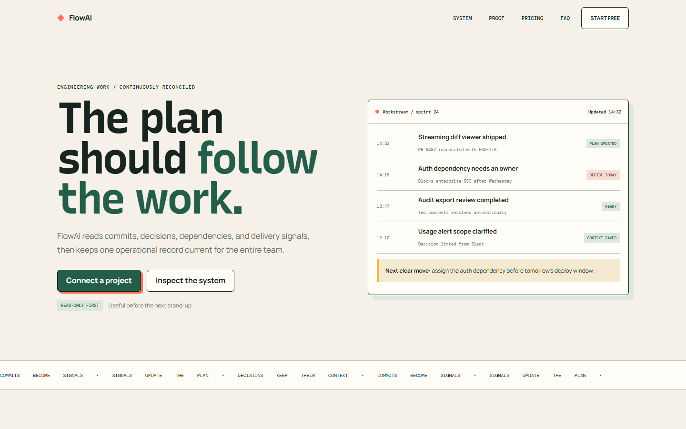
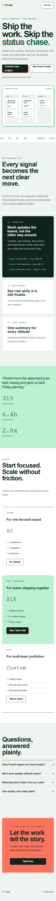
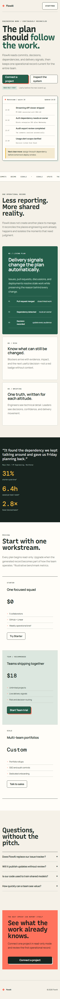
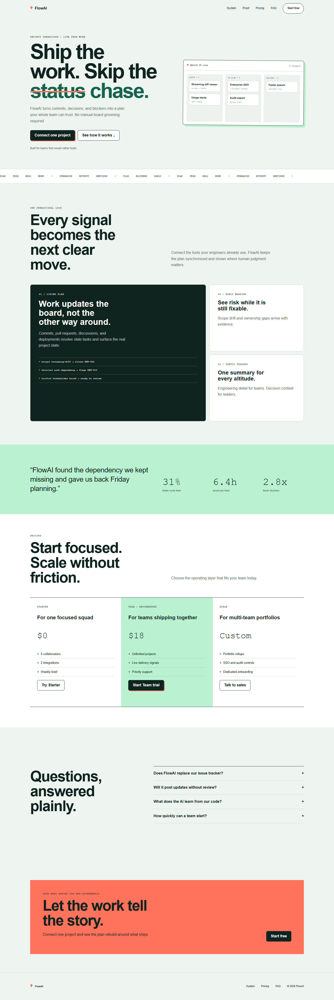
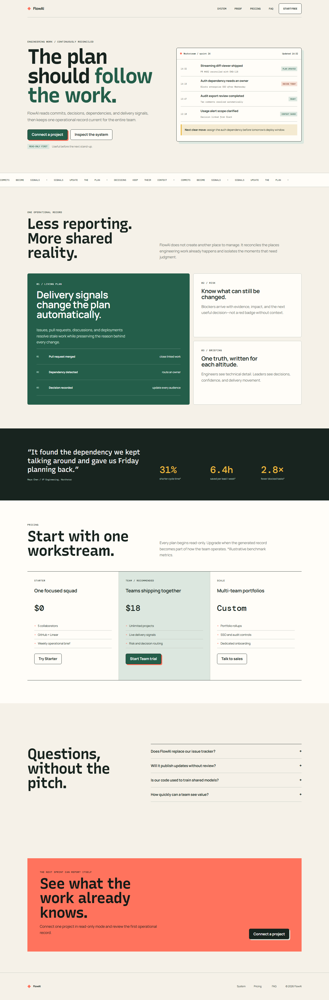
Cobalt, coral, cream, and signal yellow build a print-studio language. A native canvas ignition field supports the concept and resolves to a static final state under reduced motion.
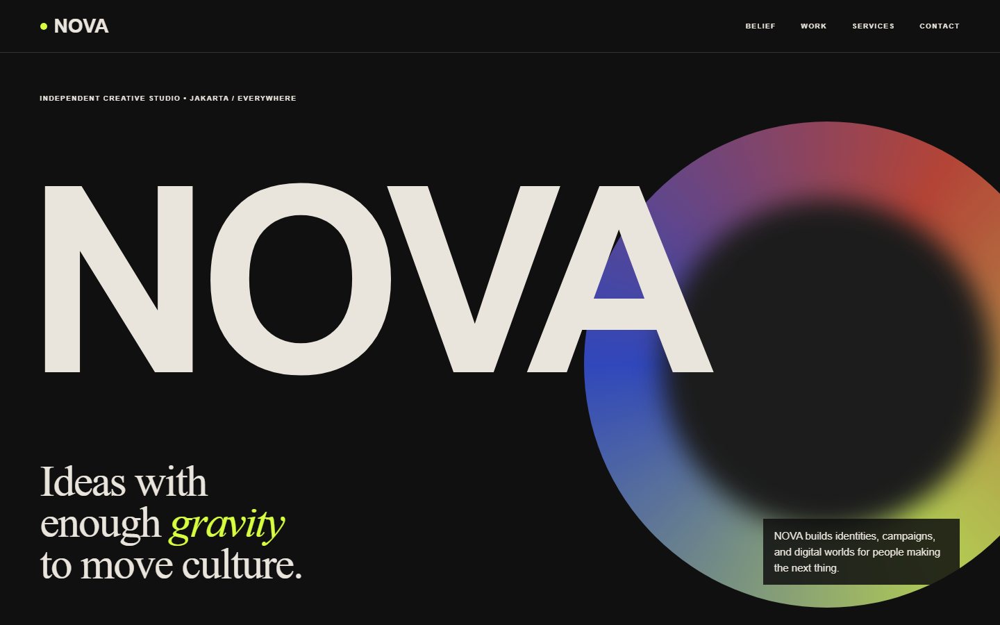
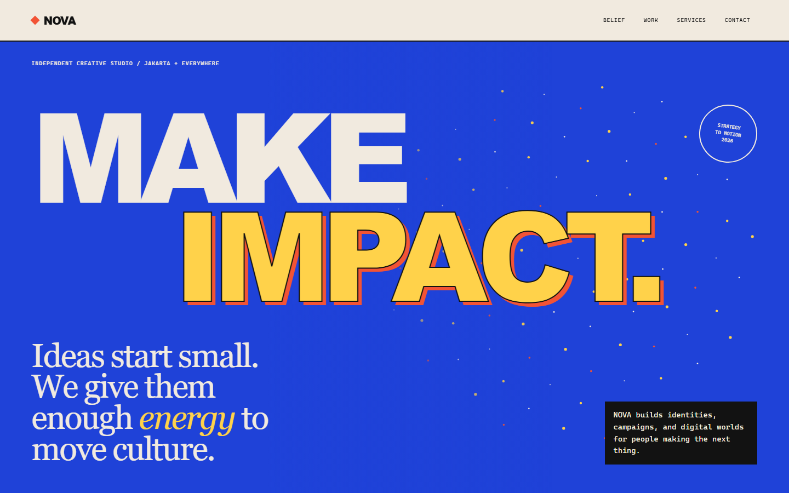
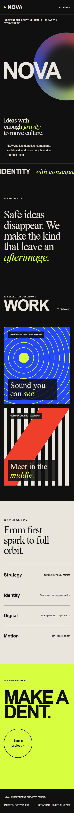
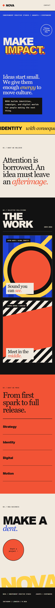
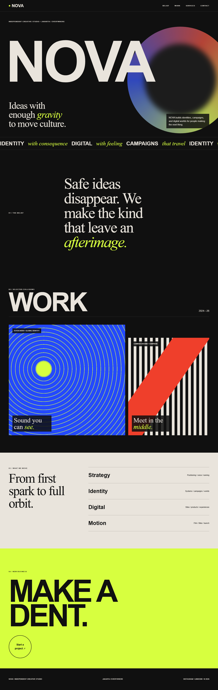
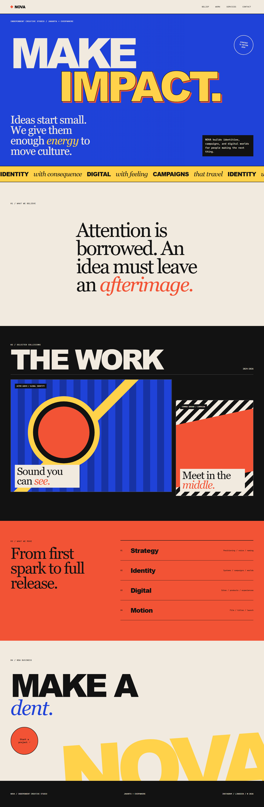
Every post-repair value below is produced by Playwright with reduced motion at 1440x900 and 390x844.
| Target | View | Height | Nodes/depth | Small targets | External | Errors | Engine |
|---|---|---|---|---|---|---|---|
| FlowAI baseline | Desktop | 4310 | 155 / 9 | 13 | 1 | 1 | n/a |
| FlowAI post | Desktop | 4374 | 176 / 9 | 0 | 0 | 0 | n/a |
| FlowAI post | Mobile | 6414 | 176 / 9 | 0 | 0 | 0 | n/a |
| NOVA baseline | Desktop | 4529 | 79 / 7 | 5 | 1 | 1 | n/a |
| NOVA post | Desktop | 4377 | 89 / 7 | 0 | 0 | 0 | true |
| NOVA post | Mobile | 4211 | 89 / 7 | 0 | 0 | 0 | true |
FlowAI improves product credibility and distinctiveness without turning the page into an agency composition. NOVA has the stronger art-direction jump through concept-tied color, typography roles, and motion. Scores are intentionally not included in the pass/fail gate; inspect the images.
Passing quality gates does not manufacture rights or remove subjective judgment.
No repository-wide grant exists. Unknown or internal material stays blocked rather than silently declared safe.
FlowAI bundles Recursive, Manrope, and DM Mono locally with their OFL copies. NOVA remains on an offline system stack that can substitute outside Windows.
The fresh benchmarks load none. Existing fallback URLs elsewhere remain blocked until per-item provenance is complete.
Restricted optional technology pending product and legal clearance. Native behavior or Motion remains the production default.